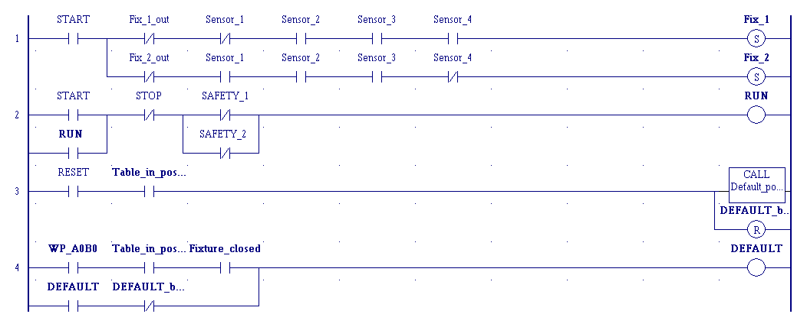

Automatika
A tantárgy célja a szabályozástechnikai és PLC használati alapok megteremtése.
A PLC mintavideó megtekintéséhez kattintson ide!
Aláírás feltételei:
- Aktív részvétel a gyakorlatokon.
- Az évközi számonkérések sikeres (legalább 50%-os) teljesítése.
Ütemterv
- A tantárgyi követelmények ismertetése. Szabályozástechnikai alapfogalmak.
- Alapvető (ÉS, VAGY, NEM) logikai függvények és azonosságok. A logikai függvények megadási módjai.
- A logikai függvények egyszerűsítésének módjai. Kombinációs vezérlések, azok tervezési lépései. Példák kódrendszerekre (BCD, Aiken, Stibitz).
- A logikai függvények realizálása, a realizáció grafikus elemei.
- 1. egyéni feladat beadása. Szekvenciális vezérlések. A tárolóelemek (RS, JK, T, D) alkalmazásai.
- 1. zárthelyi dolgozat. A PLC vezérléstechnikai alkalmazásának alapjai.
- Az IEC 61131-3 szabvány és az alkalmazható programnyelvek, funkciók és funkcióblokkok.
- PLC programozás LD programnyelven (I). A programok fejlesztői környezete (szerkesztés, futtatás, debugging). Feladatmegoldás egyszerű példákon keresztül.
- PLC programozás LD programnyelven (II). Példák számláló, időzítő és élvezérlés használatára.
- 2. egyéni feladat beadása. PLC programozás LD programnyelven (III). Összetettebb programok felépítése, megszakításkezelés.
- Az átviteli tagok fogalma, leírása idő- és operátortartományban. Lineáris és nemlineáris tag átviteli tényezője.
- 2. zárthelyi dolgozat. Az alaptagok átviteli függvényei. Összetett tagok (soros, párhuzamos, visszacsatolt) eredőjének kiszámítása.
- Az egyszerű szabályozási kör és alkotóelemei. Értéktartó és követő szabályozások. Stabilitásvizsgálat.
- Zárthelyi dolgozatok és egyéni feladatok pótlása. Esettanulmányok. Konzultációs lehetőség.